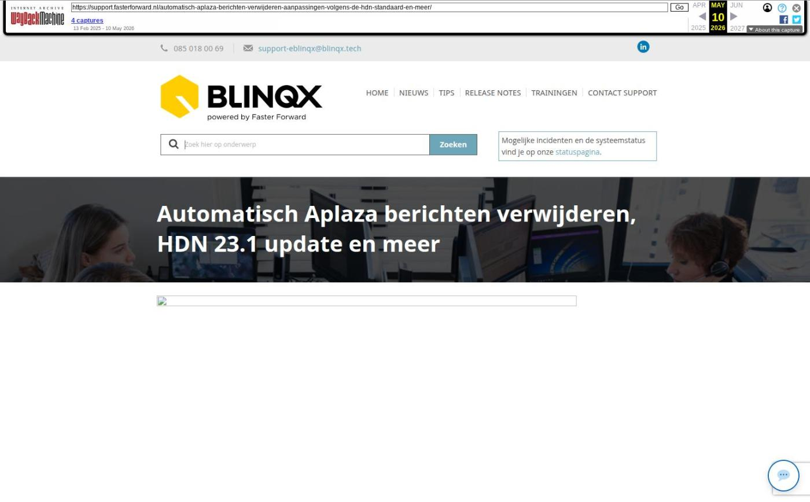

Automatisch Aplaza berichten verwijderen, HDN 23.1 update en meer

Tekstinhoud
Op dinsdag 12 december zijn Elements en eBlinqx aangepast conform de HDN standaard 23.1. Zo kunnen alle HDN berichten ontvangen en verstuurd blijven worden. Daarnaast is het onder andere mogelijk om Aplaza berichten automatisch te laten verwijderen.
Automatisch Aplaza berichten verwijderen
Bericht bij prolongatie op hoofdvervaldatum
Zelf opgestelde formulieren toesturen naar de klant
HDN 23.1 update
Overige verbeteringen
Automatisch Aplaza berichten verwijderen
Vanaf nu hoef je minder Aplaza berichten handmatig te verwijderen. Dit scheelt een hoop tijd. Vanuit de Aplaza inbox, via het hamburgermenu, kan je instellen welke berichten door het systeem direct verwijderd moeten worden na het (automatisch) koppelen aan het dossier. Dit kan iedereen instellen die toegang heeft tot de Aplaza inbox. Je doet dit aan de hand van de soort documenten. Je kunt per soort document aangeven of deze door het systeem direct verwijderd moet worden. Het verwijderen gaat in vanaf het moment dat de instelling is gedaan. Dit werkt niet met terugwerkende kracht. Het automatisch verwijderen geldt alleen voor correspondentieberichten. Berichten waarbij een nieuwe polis/dossier wordt aangemaakt of een bestaande polis wordt aangepast (offerteberichten) moeten altijd handmatig verwijderd worden.
Bericht bij prolongatie op hoofdvervaldatum
Vanaf nu is het mogelijk om via de workflow een notificatie te krijgen of de klant te informeren wanneer er een prolongatie op hoofdvervaldatum is verwerkt. Een prolongatie op hoofdvervaldatum is verwerkt bij het afronden van de ADN batch (het klikken op 'Controlelijst afronden'). Na het afronden van de batch krijgt de workflow een seintje. Je kan zelf bepalen wat voor acties er dan uitgevoerd moeten worden, bijvoorbeeld een taak of e-mail aanmaken.
Wil je hiervan gebruik maken? Stuur dan een e-mail naar support@fasterforward.nl.
Zelf opgestelde formulieren toesturen naar de klant
In de vorige release hebben we in samenwerking met Finly het mogelijk gemaakt om gemakkelijk formulieren toe te sturen naar de klant. Het is vanaf nu ook mogelijk om formulieren die je zelf hebt aangemaakt in Finly vanuit Elements en eBlinqx naar de klant te versturen. Zo kan je zelf bepalen welke gegevens je wilt ophalen bij de klant. Ook deze formulieren vult Elements en eBlinqx al met de NAWTE gegevens die bij ons bekend zijn.
Wil je hiervan gebruik maken? Het zelf aangemaakte formulier moet dan in de workflow verwerkt worden. Stuur een e-mail naar support@fasterforward.nl met daarin het dossiertype ID van het zelfgemaakte formulier (deze is eventueel op te vragen bij Finly).
Maak je nog niet gebruik van de koppeling met Finly? Neem dan eerst contact op met Finly (marnix.ravestein@finly.nl) om een overeenkomst af te sluiten.
HDN 23.1 update
Nieuwe energielabels toegevoegd
Er zijn nieuwe energielabels ontwikkeld, bijvoorbeeld A++++ (EP garantie) en Geen energielabel mogelijk. Deze energielabels zijn aan Elements en eBlinqx toegevoegd, zodat deze vanuit het HDN bericht overgenomen kunnen worden of handmatig geselecteerd kunnen worden. Dit onder het hypotheekproduct – tabblad Wonen.
Vast flexibel budget weergeven
Onder het tabblad Inkomen komt nu het vast flexibel budget te staan. Dit veld wordt zichtbaar bij bepaalde inkomenssoorten die vallen onder inkomen uit loondienst. Deze wordt gevuld vanuit het HDN bericht of kan handmatig ingevuld worden.
Doel van financiering uitgebreid
In een consumptief krediet kan je aangeven wat het doel van financiering is. Aan de lijst met doelen zijn nieuwe waardes toegevoegd en oude waardes verwijderd. Mocht er in de bestaande productkaart een oude verwijderde waarde staan dan wordt deze vervangen door Anders, zie toelichting. In de toelichting komt deze oude waarde te staan.
Overige verbeteringen
Via de module 'Nog te ontvangen provisie overzicht' kan je nu gemakkelijker de boekingen die staan op de grootboekrekening 1750 Onbekende ontvangsten maatschappijen koppelen aan een dossier. Je kunt nu de posten ook koppelen aan gearchiveerde producten en de check op pakketnummer is eruit gehaald
De rapportage CRM – Verzekeringsportefeuille is uitgebreid met de kolommen Verzekeringnemer_id, Offerte_id en offertedeel_id
Wanneer je een online afspraak vanuit Elements of eBlinqx verstuurt, kon het gebeuren dat er een e-mail met daarin een 'Open agenda' afspraak met een andere start- en einddatum terugkwam. Dit na het bevestigen van de uitnodiging door de andere partij. Dit is gecorrigeerd, waardoor nu de juiste start- en einddatum in de bevestigingsmail komt te staan
Vanaf nu wordt de subadministratie automatisch gevuld onder de organisatie, indien deze nog niet geselecteerd is, bij het maken van een memoriaal boeking vanuit workflow. Dit wordt aangevuld in de administratie die in de workflowactie staat geselecteerd
Wanneer je met mutatievoorstellen maatschappij volgend werkt, wordt de rappeltaak bij het royeren van een pakket direct aangemaakt. Eerst werd deze taak pas aangemaakt op de rappeldatum zelf
Het zoeken in de Poliszoeker is verbeterd. Wanneer je nu zoekt op kenteken, wordt alleen het polisonderdeel getoond waaraan dit object is gekoppeld
Op de startpagina van een dossier wordt nu in de dossiersamenvatting alle taken vermeld die gekoppeld zijn aan het dossier. Voorheen werden hier alleen de taken getoond die gekoppeld waren aan het dossier én de ingelogde gebruiker
De bestanden die aan een stuk of schademelding gekoppeld zijn, blijven daaraan gekoppeld ook al wordt de e-mail met deze bestanden ontkoppeld of herkoppeld van het dossier. Voorheen werden deze bestanden ook ontkoppeld en verwijderd, waardoor er een foutmelding verscheen bij het openen van het stuk of de schademelding
Bij de aanvraag bankgarantie of inkomensverklaring wordt nu in alle situaties een taak aangemaakt als zij documenten opvragen
Geplaatst op 11 december 2023
Laatste 5 releasenotes
Nog meer data en documenten vergelijken »
Gemakkelijk data en documenten vergelijken »
Verbeteringen boekhouding en facturatie »
Verbeteringen gespreksopname en onder de motorkap »
Verbeteringen onder de motorkap en gespreksopnames »